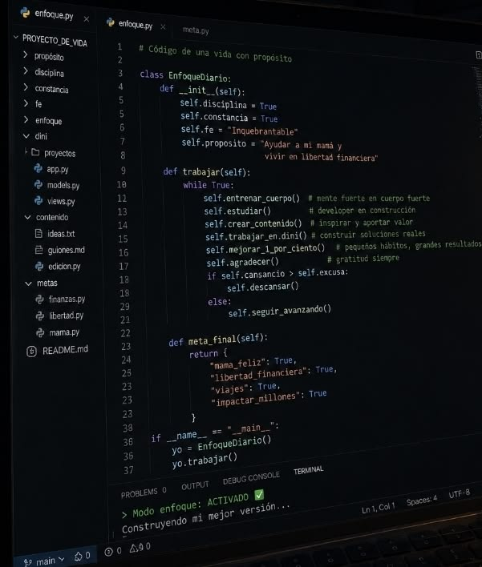

Saniweb | Based in Gauteng, working across South Africa
Websites & digital systems built for growing businesses.
I design and develop modern websites and practical business systems that make your company look established, generate enquiries, and stay easy to manage after launch.
Web Design • Development • Business Systems • Website Management

What I Do
Digital work that helps businesses look credible and get contacted.
From the first impression to the final contact form, each page is planned around the customer journey, mobile screens, and a clear next step.
Web Design
Landing pages, business sites, and portfolios with strong visual identity.
Apps
Responsive interfaces and interactive user flows for web and mobile products.
Management
Website updates, improvements, content changes, and ongoing care.
Email Marketing
Email campaigns, lead capture flows, and follow-ups that keep customers engaged.
Selected Work
Real project proof, not empty placeholders.
Each project is shown as a small case study so visitors can understand the business problem, what was built, and how to view the live site.
Business Website
MCMC
MCMC needed a professional online presence that clearly communicated its services and gave customers a direct route to make contact.
- Responsive website
- Service sections
- Contact journey
- Mobile optimisation
Why Saniweb?
Built around business outcomes, not just good-looking pages.
Built around your business
Your website is shaped around your customers, services, goals, and the actions you need visitors to take.
Design + Development
You do not have to coordinate separate design and coding work. Saniweb handles both in one workflow.
Built to generate enquiries
Contact forms, WhatsApp, calls, and clear CTAs are built into the customer journey from the start.
Ongoing support
After launch, your website can be maintained, improved, updated, and expanded as the business grows.
Who I Help
Built for businesses that need to look bigger online.
Small Businesses
Professional websites without unnecessary complexity.
Startups
Landing pages and MVP interfaces to launch quickly.
Professional Services
Websites for consultants, contractors, agencies, and service providers.
Growing Businesses
Website management, improvements, and simple digital systems.
Meet Sanele
A software developer focused on practical digital experiences for businesses.
I build websites, digital systems, and client-facing tools for businesses that need a professional online presence and a simple way to manage work after launch.
Read About SaneleHave a project in mind?